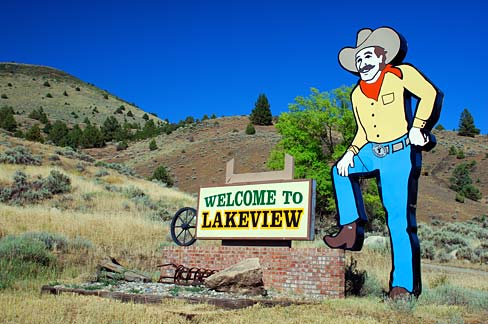

Explore Lakeview: Oregon's Hidden Gem in the Outback
Most people driving through south-central Oregon are heading somewhere else. They're making the long push between Bend and Reno, or cutting east toward Boise. Then they reach Lakeview — and something makes them slow down.
Maybe it's the way the Warner Mountains catch the late-afternoon light, turning the rimrock gold against a deep blue sky. Maybe it's the hand-painted sign announcing they've arrived at the "Tallest Town in Oregon" — a claim backed by the town's 4,800 feet of elevation. Or maybe it's the geyser erupting right off the highway, shooting steam 60 feet into the air like this small town has its own private Yellowstone.
Whatever it is, Lakeview has a way of stopping people in their tracks. And for the cyclists riding the Oregon Tour de Outback this June, it's about to become the best basecamp they've ever had.
A Geyser, a Rim, and a Refuge
Two miles north of town, Old Perpetual erupts roughly every 90 seconds from a spot at Hunter's Hot Springs. Discovered by Hudson's Bay Company trappers back in 1832, the geothermal field became famous in 1923 when a rancher named Harry Hunter drilled three wells — all of which blew out as hot water geysers. The water reaches 200 degrees Fahrenheit, and the column of steam is visible from the highway. It's one of the only continuously erupting geysers in the western United States, and it's completely free to visit.
Head 30 miles east and the terrain shifts dramatically. Hart Mountain National Antelope Refuge sprawls across 422 square miles of high desert plateau, home to pronghorn antelope, bighorn sheep, mule deer, and over 239 bird species. Warner Peak rises to 8,024 feet, and the hot spring at the campground lets you soak under stars with zero light pollution. There are no services, no cell towers, and no crowds — just you and a landscape that hasn't changed much in a thousand years.
But the jaw-dropper is Abert Rim. Running for over 30 miles along the route north from Lakeview, this fault scarp rises 2,490 feet above the valley floor — one of the highest exposed escarpments in North America. Below it sits Lake Abert, Oregon's only saltwater lake, its surface shimmering with brine shrimp and seasonal flocks of migratory birds. The scale of it is hard to process from a car. From a bicycle, it's life-changing.
Small-Town Heart, Big-Time Hospitality
Lakeview's downtown is the kind of place where shop owners wave from the door and the barista already knows you're not from around here. The Tall Town Bakery & Cafe serves handmade sandwiches and fresh pizza that would hold its own in Portland, while Eagles Nest Food & Spirits dishes out homemade soups and daily specials that fuel up hungry riders after a long day on gravel.
For accommodations, the Best Western Skyline Motor Lodge and Budget Inn offer comfortable rooms at prices that haven't caught up to the coast. RV travelers and campers have options like Junipers Reservoir RV Resort (full hookups, Wi-Fi, laundry) or the Lake County Fairgrounds itself — which is exactly where Tour de Outback riders will be camping and gathering for the event.
There's the Alger Theater, a 1940s art deco movie house that still shows films and hosts community events. There's the Lake County Museum on South E Street, preserving the county's ranching, timber, and Indigenous history through photos, genealogy records, and artifacts. And there's the Warner Canyon Ski Area — one of Oregon's oldest, run by the volunteer Fremont Highlanders Ski Club — which in summer provides jaw-dropping views of the valley below.
Why Cyclists Are Taking Notice
Lakeview sits at the intersection of some of the best cycling terrain in the Pacific Northwest. The Oregon Outback Scenic Bikeway — an 89-mile loop through forests and high desert — starts right here. Gravel roads fan out in every direction through the Warner Mountains, where pronghorn outnumber people and the only traffic you'll encounter is the occasional rancher's truck.
The Tour de Outback takes full advantage of this geography, offering five distance options from a 20-mile fun ride to a 100-mile century, mixing pavement and gravel through terrain that's equal parts challenging and breathtaking. Whether you're a seasoned gravel racer or someone clipping in for the first time, the riding around Lakeview has a way of reminding you why you started cycling in the first place.
Come for the Ride, Stay for the Town
Riders arriving for Tour de Outback on June 27, 2026 will camp at the Lake County Fairgrounds, soak in the community atmosphere, and line up for one of the most scenic rides in the West. But here's the insider tip: build in an extra day. Drive out to Hart Mountain at sunset. Have breakfast at Tall Town Bakery. Watch Old Perpetual erupt while the morning fog lifts off the valley.
Lakeview isn't just a start line. It's a destination — and one that's been quietly waiting for the rest of Oregon to discover it.
Ready to Experience Lakeview?
Join us June 27, 2026 for the Oregon Tour de Outback — gravel and road cycling through the most beautiful corner of Oregon you've never seen.
Register Now